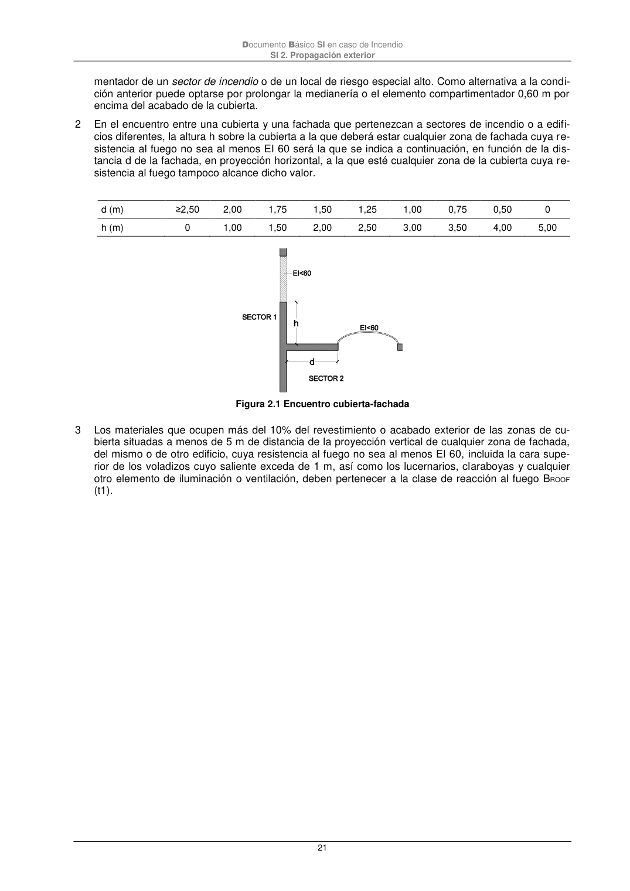

DB-SI · Página 21 · versión 2025-03-04
SHA256: 0a2e78cd62471d9cc5cfe2efbc6aa39fdbad73c124aea7b039f9de96c141e105 · página física 21 de 92 · métodos de encabezado
solo si están cotejados.
Formatos: Markdown · JSON de bloques · PDF p. 21 · imagen PNG
Documento Básico SI en caso de Incendio SI 2. Propagación exterior 21 mentador de un sector de incendio o de un local de riesgo especial alto. Como alternativa a la condi- ción anterior puede optarse por prolongar la medianería o el elemento compartimentador 0,60 m por encima del acabado de la cubierta. 2 En el encuentro entre una cubierta y una fachada que pertenezcan a sectores de incendio o a edifi- cios diferentes, la altura h sobre la cubierta a la que deberá estar cualquier zona de fachada cuya re- sistencia al fuego no sea al menos EI 60 será la que se indica a continuación, en función de la dis- tancia d de la fachada, en proyección horizontal, a la que esté cualquier zona de la cubierta cuya re- sistencia al fuego tampoco alcance dicho valor. d (m) ≥2,50 2,00 1,75 1,50 1,25 1,00 0,75 0,50 0 h (m) 0 1,00 1,50 2,00 2,50 3,00 3,50 4,00 5,00 Figura 2.1 Encuentro cubierta-fachada 3 Los materiales que ocupen más del 10% del revestimiento o acabado exterior de las zonas de cu- bierta situadas a menos de 5 m de distancia de la proyección vertical de cualquier zona de fachada, del mismo o de otro edificio, cuya resistencia al fuego no sea al menos EI 60, incluida la cara supe- rior de los voladizos cuyo saliente exceda de 1 m, así como los lucernarios, claraboyas y cualquier otro elemento de iluminación o ventilación, deben pertenecer a la clase de reacción al fuego BROOF (t1).
